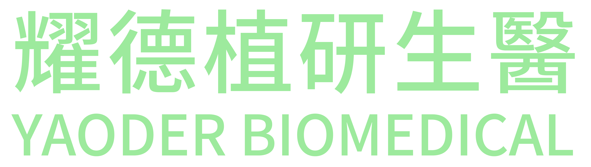
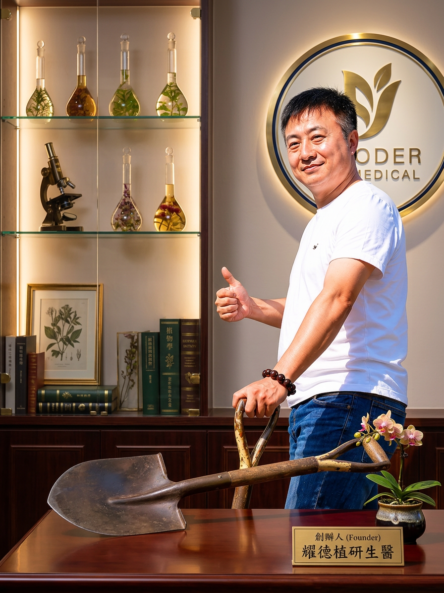

Immersive Health Experience · 沉浸式健康生活館
探索耀德的
健康世界
從台灣山林到世界舞台，跟著我們走一趟從原料採集到科學驗證的沉浸式旅程，在這裡，每一滴健康能量都有故事。

從台灣山林到世界舞台，跟著我們走一趟從原料採集到科學驗證的沉浸式旅程，在這裡，每一滴健康能量都有故事。
360° 沉浸式虛擬導覽，無需下載 App，一鍵即可進入——帶您實地走訪耀德品牌空間、GMP 製造工廠與原料產地的完整旅程。
以上為 iStaging 愛實境 虛擬展間示範——耀德植研生醫品牌展間建置中，上線後將呈現 GMP 工廠、原料產地與品牌歷史的完整 360° 沉浸式導覽。
了解 iStaging 技術 →
「台灣的山林孕育了牛樟芝，而牛樟芝守護著台灣人的健康，我們只是大自然與人之間最謙遜的傳遞者。」
以台灣牛樟芝為核心，立下二十年研究宏願
產品通過嚴格第三方檢測，走向國際市場
自建符合國際標準的 GMP 製造設施
牛樟芝三萜類免疫研究獲國際學術界肯定
跨足新世代生技保養領域，開創產業新頁
數位化品牌體驗，讓健康觸手可及
懸停或點擊卡片，揭開每一種活性成分背後的科學秘密。
促進免疫系統調節，增強自然殺手細胞活性，為牛樟芝最重要的活性成分之一。具有顯著的免疫調節功能，能有效提升人體自我保護機制。
牛樟芝獨有的三萜類化合物，具有強效的生物活性，含量多寡是品質好壞的最重要指標，也是耀德頂級系列的核心競爭力。
天然抗氧化酵素，有效清除自由基，延緩細胞老化，保護人體免受氧化壓力傷害，是天然抗老的重要武器。
具有調節心血管功能的活性核苷，協助維持正常心律，並有助於改善末梢血液循環，維持全身機能的協調運作。
維生素 D 的前驅物，有助於鈣質吸收與骨骼健康。牛樟芝中富含此成分，有利於人體能量代謝與細胞膜的正常維護。
牛樟芝特有的倍半萜類化合物，是耀德高端產品的獨特競爭力，在學術研究中展現出顯著的生物活性，引起國際學界高度關注。
台灣深山孕育了世界上最珍稀的牛樟芝，每一個產地都有其獨特的微氣候與生態環境，共同造就耀德產品無可複製的品質。
以上為 iStaging 愛實境 虛擬展間示範——耀德植研生醫三大產地（南投仁愛鄉、嘉義阿里山、台東太麻里）的專屬 360° 實地導覽展間建置中，即將上線。
了解 iStaging 技術 →每一粒膠囊、每一罐飲品，都在嚴格的 GMP 環境中誕生。點擊下方各製程區域，360° 沉浸式走訪耀德的品質把關現場。
優良製造規範
食品安全管理
危害分析管制
國際第三方驗證
以上為 iStaging 愛實境 虛擬展間示範——耀德植研生醫 GMP 工廠七大製程區域的 360° 實地導覽展間建置中，即將上線。
了解 iStaging 技術 →回答 7 個關於你的生活型態問題——睡眠、壓力、飲食、運動——耀德 AI 引擎將生成你的個人化健康報告，並推薦最適合你的保健組合。